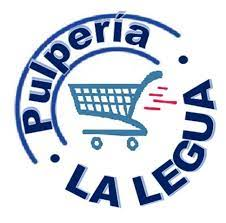

Pulpería La Legua es una empresa familiar con el propósito de brindar una excelencia del servicio al cliente, inicialmente en el año 2002 nace como un centro de abastecimiento de alimentos, abarrotes, artículos de uso cotidiano; también, un lugar de sociabilidad donde los vecinos se reunían a conversar sobre los acontecimientos del pueblo y a realizar actividades de esparcimiento. Un pequeño negocio con medidas de 2.70m2, con muy poco capital para iniciar el abastecimiento de mercadería y una experiencia limitada en ventas. Doce años después el negocio familiar toma la decisión de solicitar un préstamo para ampliar la infraestructura del negocio, dando un gran salto en el crecimiento comercial, mejorando el servicio a los clientes con un mayor inventario de productos, dentro de ellos, abarrotes, fontanería, productos de limpieza, bebidas, tortillas, productos de panadería, lascteos, snacks, helados, frutas, verduras, artículos de higiene, entre otros. Actualmente Pulpería La Legua se caracteriza por ser un negocio de confianza, honestidad y responsabilidad.
Pulpería La Legua, su negocio de confianza.
Copyright © 2021 Pulperia La Legua